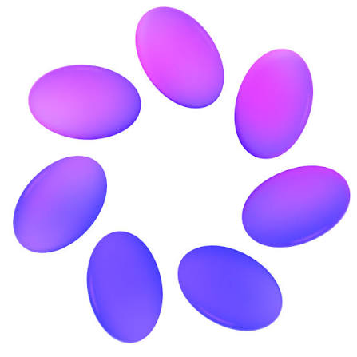

El laboratorio fue fundado como Facebook Artificial Intelligence Research (FAIR, por sus siglas en inglés) con ubicaciones en las sedes de Menlo Park, California, Londres, Reino Unido y un nuevo laboratorio en Manhattan. FAIR fue anunciado oficialmente en septiembre de 2013. FAIR fue dirigido por primera vez por Yann LeCun, profesor de aprendizaje profundo de la Universidad de Nueva York y ganador del premio Turing. En colaboración con el Centro de Ciencias de Datos de la Universidad de Nueva York, el objetivo inicial de FAIR era investigar la ciencia de datos, el aprendizaje automático y la inteligencia artificial y "comprender la inteligencia, descubrir sus principios fundamentales y hacer que las máquinas sean significativamente más inteligentes". La investigación en FAIR fue pionera en la tecnología que condujo al reconocimiento facial, el etiquetado en fotografías y la recomendación de feeds personalizados. Vladimir Vapnik, pionero en el aprendizaje estadístico, se unió a FAIR en 2014. Vapnik es el coinventor de la máquina de vectores de soporte y uno de los desarrolladores de la teoría de Vapnik-Chervonenkis
FAIR abrió un centro de investigación en París, Francia, en 2015,y posteriormente lanzó laboratorios de investigación satelital más pequeños en Seattle, Pittsburgh, Tel Aviv, Montreal y Londres. En 2016, FAIR se asoció con Google, Amazon, IBM y Microsoft para crear la Alianza sobre Inteligencia Artificial en Beneficio de las Personas y la Sociedad, una organización centrada en la investigación con licencia abierta, que apoya prácticas de investigación éticas y eficientes y debate sobre equidad, inclusión y transparencia
En 2018, Jérôme Pesenti, ex director de tecnología del grupo de big data de IBM, asumió el cargo de presidente de FAIR, mientras que LeCun renunció para desempeñarse como científico jefe de IA. En 2018, FAIR ocupó el puesto 25 en el ranking de investigación de IA de 2019, que clasificó a las principales organizaciones mundiales que lideran la investigación de IA. FAIR ascendió rápidamente a la octava posición en 2019, y mantuvo la octava posición en el ranking de 2020. FAIR tenía aproximadamente 200 empleados en 2018 y tenía el objetivo de duplicar ese número para 2020
El trabajo inicial de FAIR incluyó investigaciones en redes de memoria habilitadas por modelos de aprendizaje, aprendizaje autosupervisado y redes generativas antagónicas, clasificación y traducción de textos, así como visión artificial. En 2017, FAIR lanzó los módulos de aprendizaje profundo Torch, así como PyTorch, un marco de aprendizaje automático de código abierto que posteriormente se utilizó en varias tecnologías de aprendizaje profundo, como el piloto automático de Tesla y Pyro de Uber. También en 2017, FAIR interrumpió un proyecto de investigación una vez que los robots de IA desarrollaron un lenguaje ininteligible para los humanos, lo que incitó conversaciones sobre el miedo distópico de que la inteligencia artificial se saliera de control. Sin embargo, FAIR aclaró que la investigación se había interrumpido porque habían logrado su objetivo inicial de comprender cómo se generan los idiomas, y no por miedo
FAIR pasó a llamarse Meta AI tras el cambio de marca que realizó Facebook, Inc. a Meta Platforms Inc
En 2022, Meta AI predijo la forma 3D de 600 millones de proteínas potenciales en dos semanas